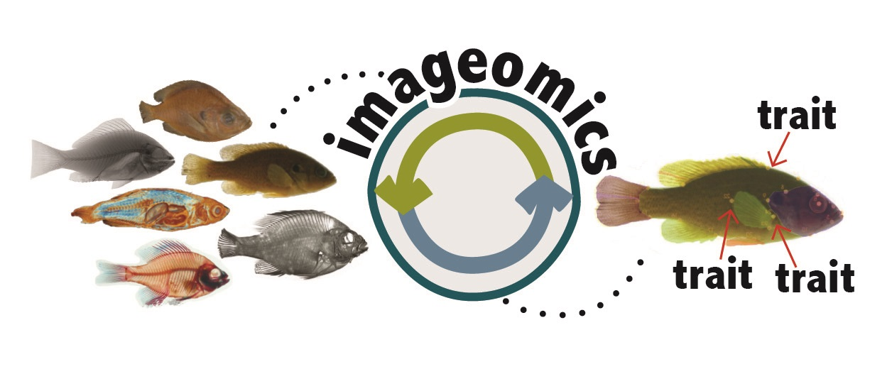
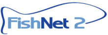
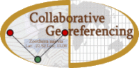
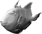
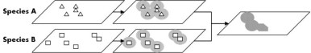

Biodiversity Informatics
Biodiversity Informatics at TUBRI is innovating technology to enable information discovery, analysis, and presentation of the ever increasing amount of data about our natural world. Current work is focused on developing 1) tools to facilitate georeferencing, such as GEOLocate and the CoGe platform, 2) data sharing networks, such as FishNet and 3) hardware and software systems for rapid 2D and 3D specimen digitization.

-
Imageomics will use machine learning methods to extract biological traits from images—including photos and videos—such as the behavior or physical appearance of an individual, or even the distinguishing skeletal structure of a species. These traits will be later used to train Neural Network algorithms for species identification and morphological barcoding purposes.
- The goal of this project is to generate monthly streamflow and water temperature predictions for stream sections in all major watersheds across the United States and Canada from 1950-2099 and mobilize the results with support for temporal and spatial browsing, querying and downloading. Furthermore, the data are to be integrated with the FishNet2 data portal, facilitating characterization of habitat requirements for freshwater fishes in the United States and Canada. Hydroclim is a collaboration between Tulane University, Saint Louis University, and Indiana University.

FishNet 2
- FishNet2, the successor to the original FishNet network, is a collaboration between 70+ fish collections around the world to share information on specimen holdings via the web. Currently underway is a collaborative georeferencing and data enhancement project titled "Georeferencing U.S. Fish Collections: a community-based model to georeferencing natural history collections" funded by the United States National Science Foundation. Twelve collaborating institutions are working to expand and improve data quality within the FishNet network with a primary focus on geospatial referencing records lacking geographic coordinates (approximately 45% of the network holdings at the time of funding).
- The GEOLocate project began in February of 2002 as an effort to develop efficient computer-assisted methods for georeferencing natural history collections’ data. GEOLocate now comprises a collection of interoperable software components that facilitate the retrospective georeferencing of legacy specimen occurrence data from anywhere in the world.

- The goal of this project was to design a collaborative georeferencing framework around the GEOLocate georeferencing platform. This project supports the needs of large scale georeferencing by allowing users to create communities that share datasets and distribute workload. Similarity matching between shared records further increases the efficiency of georeferencing. A web-based data portal is used for creation and management of georeferencing communities. Verification of data within a community is accomplished through a specialized GEOLocate web client.
- Funded in 2011, VertNet aims to bring together FishNet, MANIS, HerpNet & Ornis within a unified cloud based architecture. Specifically our development team is involved in the the integration of VertNet’s cloud architecture into GEOLocate’s collaborative data portal and the outreach of georeferencing technologies.

Machine Learning in Taxonomic Research
- In collaboration with researchers at the University of Mississippi, this project aims to create a system that will provide taxonomists with a powerful research tool for rapidly analyzing data aquired from photographic images and thee dimensional specimens scans. The main goal of this research project is to develop machine learning based species identification and new species discovery technologies for taxonomic research. The developed core computational techniques will be integrated into a prototype intelligent system for fishes.

- Taxonomic footprints are sets of polygons that define areas of species co-occurrence based on previously georeferenced occurrences of species collected at a locality. The footprints can be used in validating coordinates assigned to the locality by automated georeferencing tools. We developed web services that query species point occrrence data from the Global Biodiversity Information Facility given a list of species, buffers those results and produces a composite overlay representing areas of co-occurrence. These results can then be used to validate the results of automated georeferencing.